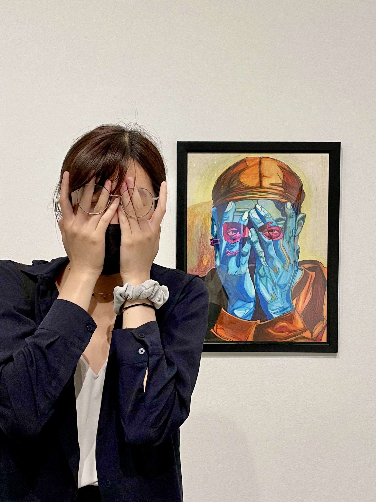

Hi, I’m Sophia Lin
— a UX Research & Design student at the University of Michigan. My work is rooted in empathy, curiosity, and craft.
I love making digital experiences feel thoughtful, intuitive, and just a little magical.
I care deeply about accessibility, emerging technologies, and how we design for complexity without losing clarity. I’ve explored everything from AI-assisted workflows to immersive XR storytelling — and I’m always learning something new.
>
I’m also a visual storyteller, a tea drinker, and someone who finds joy in quiet design decisions that make users feel seen.
Thanks for stopping by 🧡
Download My Resume
My Journey
- 2025 — Master’s student in UX Research & Design, University of Michigan 🎓
- 2023 — Graduated from University of Pittsburgh (Computer Science) 🎉
- 2018-2022 — UX Projects, Graphic Design Work, Freelance Exploration 🎨
- Childhood — Grew up between the U.S. and Shanghai, always curious 🌏